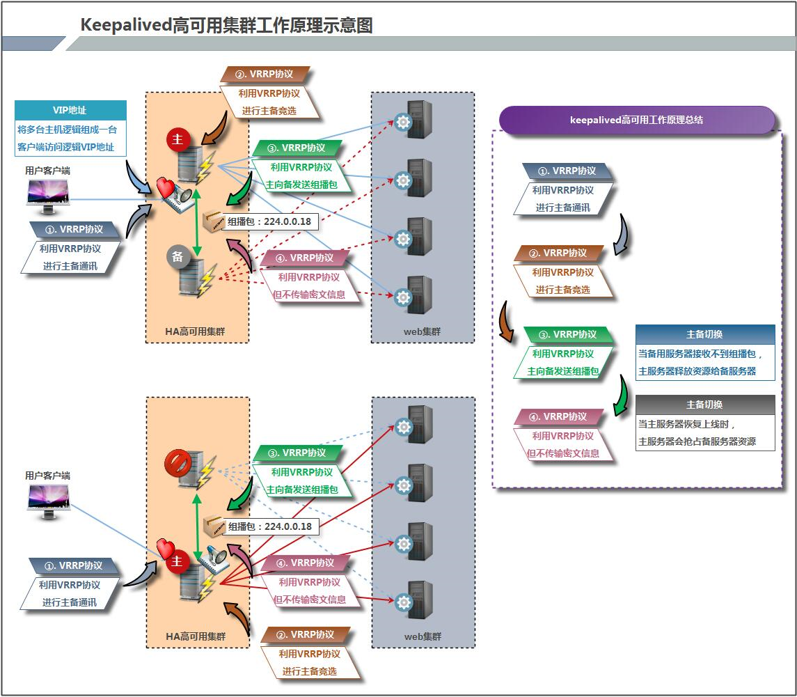

keepalived

文章目录
1. keepalived简介
1.1 keepalived是什么？
Keepalived 软件起初是专为LVS负载均衡软件设计的，用来管理并监控LVS集群系统中各个服务节点的状态，后来又加入了可以实现高可用的VRRP功能。因此，Keepalived除了能够管理LVS软件外，还可以作为其他服务（例如：Nginx、Haproxy、MySQL等）的高可用解决方案软件。
Keepalived软件主要是通过VRRP协议实现高可用功能的。VRRP是Virtual Router RedundancyProtocol(虚拟路由器冗余协议）的缩写，VRRP出现的目的就是为了解决静态路由单点故障问题的，它能够保证当个别节点宕机时，整个网络可以不间断地运行。
所以，Keepalived 一方面具有配置管理LVS的功能，同时还具有对LVS下面节点进行健康检查的功能，另一方面也可实现系统网络服务的高可用功能。
keepalived官网
1.2 keepalived的重要功能
keepalived 有三个重要的功能，分别是：
- 管理LVS负载均衡软件
- 实现LVS集群节点的健康检查
- 作为系统网络服务的高可用性（failover）
1.3 keepalived高可用故障转移的原理
Keepalived 高可用服务之间的故障切换转移，是通过 VRRP (Virtual Router Redundancy Protocol ,虚拟路由器冗余协议）来实现的。
在 Keepalived 服务正常工作时，主 Master 节点会不断地向备节点发送（多播的方式）心跳消息，用以告诉备 Backup 节点自己还活看，当主 Master 节点发生故障时，就无法发送心跳消息，备节点也就因此无法继续检测到来自主 Master 节点的心跳了，于是调用自身的接管程序，接管主 Master 节点的 IP 资源及服务。而当主 Master 节点恢复时，备 Backup 节点又会释放主节点故障时自身接管的IP资源及服务，恢复到原来的备用角色。
那么，什么是VRRP呢？ VRRP ,全 称 Virtual Router Redundancy Protocol ,中文名为虚拟路由冗余协议 ，VRRP的出现就是为了解决静态踣甶的单点故障问题，VRRP是通过一种竞选机制来将路由的任务交给某台VRRP路由器的。
1.4 keepalived原理
1.4.1 keepalived高可用架构图

1.4.2 keepalived工作原理描述
Keepalived高可用对之间是通过VRRP通信的，因此，我们从 VRRP开始了解起： 1) VRRP,全称 Virtual Router Redundancy Protocol,中文名为虚拟路由冗余协议，VRRP的出现是为了解决静态路由的单点故障。 2) VRRP是通过一种竟选协议机制来将路由任务交给某台 VRRP路由器的。 3) VRRP用 IP多播的方式（默认多播地址（224.0_0.18))实现高可用对之间通信。 4) 工作时主节点发包，备节点接包，当备节点接收不到主节点发的数据包的时候，就启动接管程序接管主节点的开源。备节点可以有多个，通过优先级竞选，但一般 Keepalived系统运维工作中都是一对。 5) VRRP使用了加密协议加密数据，但Keepalived官方目前还是推荐用明文的方式配置认证类型和密码。
介绍完 VRRP,接下来我再介绍一下 Keepalived服务的工作原理：
Keepalived高可用是通过 VRRP 进行通信的， VRRP是通过竞选机制来确定主备的，主的优先级高于备，因此，工作时主会优先获得所有的资源，备节点处于等待状态，当主挂了的时候，备节点就会接管主节点的资源，然后顶替主节点对外提供服务。
在 Keepalived 服务之间，只有作为主的服务器会一直发送 VRRP 广播包,告诉备它还活着，此时备不会枪占主，当主不可用时，即备监听不到主发送的广播包时，就会启动相关服务接管资源，保证业务的连续性.接管速度最快可以小于1秒。
2. keepalived配置文件讲解
2.1 keepalived默认配置文件
keepalived 的主配置文件是 /etc/keepalived/keepalived.conf。其内容如下：
1 2 3 4 5 6 7 8 9 10 11 12 13 14 15 16 17 18 19 20 21 22 23 24 25 26 27 28 29 30 31 32 33 34 35 36 37 38 39 40 41 42 43 44 45 46 47 48 49 50 51 52 53 54 55 56 57 58 59 60 61 62 63 64 65 66 67 68 69 70 71 72 73 74 75 76 77 78 79 80 81 82 |
[root@master ~]# cat /etc/keepalived/keepalived.conf
! Configuration File for keepalived
global_defs { //全局配置
notification_email { //定义报警收件人邮件地址
acassen@firewall.loc
failover@firewall.loc
sysadmin@firewall.loc
}
notification_email_from Alexandre.Cassen@firewall.loc //定义报警发件人邮箱
smtp_server 192.168.200.1 //邮箱服务器地址
smtp_connect_timeout 30 //定义邮箱超时时间
router_id LVS_DEVEL //定义路由标识信息，同局域网内唯一
vrrp_skip_check_adv_addr
vrrp_strict
vrrp_garp_interval 0
vrrp_gna_interval 0
}
vrrp_instance VI_1 { //定义实例
state MASTER //指定keepalived节点的初始状态，可选值为MASTER|BACKUP
interface eth0 //VRRP实例绑定的网卡接口，用户发送VRRP包
virtual_router_id 51 //虚拟路由的ID，同一集群要一致
priority 100 //定义优先级，按优先级来决定主备角色，优先级越大越优先
nopreempt //设置不抢占
advert_int 1 //主备通讯时间间隔
authentication { //配置认证
auth_type PASS //认证方式，此处为密码
auth_pass 1111 //同一集群中的keepalived配置里的此处必须一致，推荐使用8位随机数
}
virtual_ipaddress { //配置要使用的VIP地址
192.168.200.16
}
}
virtual_server 10.10.10.2 1358 { //配置虚拟服务器
delay_loop 6 //健康检查的时间间隔
lb_algo rr //lvs调度算法
lb_kind NAT //lvs模式
persistence_timeout 50 //持久化超时时间，单位是秒
protocol TCP //4层协议
sorry_server 192.168.200.200 1358 //定义备用服务器，当所有RS都故障时用sorry_server来响应客户端
real_server 192.168.200.2 1358 { //定义真实处理请求的服务器
weight 1 //给服务器指定权重，默认为1
HTTP_GET {
url {
path /testurl/test.jsp //指定要检查的URL路径
digest 640205b7b0fc66c1ea91c463fac6334d //摘要信息
}
url {
path /testurl2/test.jsp
digest 640205b7b0fc66c1ea91c463fac6334d
}
url {
path /testurl3/test.jsp
digest 640205b7b0fc66c1ea91c463fac6334d
}
connect_timeout 3 //连接超时时间
nb_get_retry 3 //get尝试次数
delay_before_retry 3 //在尝试之前延迟多长时间
}
}
real_server 192.168.200.3 1358 {
weight 1
HTTP_GET {
url {
path /testurl/test.jsp
digest 640205b7b0fc66c1ea91c463fac6334c
}
url {
path /testurl2/test.jsp
digest 640205b7b0fc66c1ea91c463fac6334c
}
connect_timeout 3
nb_get_retry 3
delay_before_retry 3
}
}
} |
2.2 定制主配置文件
vrrp_instance段配置
1 2 3 4 5 6 |
nopreempt //设置为不抢占。默认是抢占的，当高优先级的机器恢复后，会抢占低优先 \ 级的机器成为MASTER，而不抢占，则允许低优先级的机器继续成为MASTER，即使高优先级 \ 的机器已经上线。如果要使用这个功能，则初始化状态必须为BACKUP。 preempt_delay //设置抢占延迟。单位是秒，范围是0---1000，默认是0.发现低优先 \ 级的MASTER后多少秒开始抢占。 |
vrrp_script段配置
1 2 3 4 5 6 7 8 9 10 11 12 13 14 15 16 17 18 19 20 |
作用：添加一个周期性执行的脚本。脚本的退出状态码会被调用它的所有的VRRP Instance记录。
注意：至少有一个VRRP实例调用它并且优先级不能为0.优先级范围是1-254.
vrrp_script <SCRIPT_NAME> {
...
}
选项说明：
script "/path/to/somewhere" //指定要执行的脚本的路径。
interval <INTEGER> //指定脚本执行的间隔。单位是秒。默认为1s。
timeout <INTEGER> //指定在多少秒后，脚本被认为执行失败。
weight <-254 --- 254> //调整优先级。默认为2.
rise <INTEGER> //执行成功多少次才认为是成功。
fall <INTEGER> //执行失败多少次才认为失败。
user <USERNAME> [GROUPNAME] //运行脚本的用户和组。
init_fail //假设脚本初始状态是失败状态。
weight说明：
1. 如果脚本执行成功(退出状态码为0)，weight大于0，则priority增加。
2. 如果脚本执行失败(退出状态码为非0)，weight小于0，则priority减少。
3. 其他情况下，priority不变。 |
real_server段配置
1 2 3 4 5 6 7 |
weight <INT> //给服务器指定权重。默认是1
inhibit_on_failure //当服务器健康检查失败时，将其weight设置为0， \
而不是从Virtual Server中移除
notify_up <STRING> //当服务器健康检查成功时，执行的脚本
notify_down <STRING> //当服务器健康检查失败时，执行的脚本
uthreshold <INT> //到这台服务器的最大连接数
lthreshold <INT> //到这台服务器的最小连接数 |
tcp_check段配置
1 2 3 4 5 6 7 8 9 |
connect_ip <IP ADDRESS> //连接的IP地址。默认是real server的ip地址 connect_port <PORT> //连接的端口。默认是real server的端口 bindto <IP ADDRESS> //发起连接的接口的地址。 bind_port <PORT> //发起连接的源端口。 connect_timeout <INT> //连接超时时间。默认是5s。 fwmark <INTEGER> //使用fwmark对所有出去的检查数据包进行标记。 warmup <INT> //指定一个随机延迟，最大为N秒。可防止网络阻塞。如果为0，则关闭该功能。 retry <INIT> //重试次数。默认是1次。 delay_before_retry <INT> //默认是1秒。在重试之前延迟多少秒。 |
2.3 实例
1 2 3 4 5 6 7 8 9 10 11 12 13 14 15 16 17 18 19 20 21 22 23 24 25 26 27 28 29 30 31 32 33 34 35 36 37 38 39 40 41 42 |
global_defs {
router_id LVS_Server
}
vrrp_instance VI_1 {
state BACKUP
interface ens33
virtual_router_id 51
priority 150
nopreempt
advert_int 1
authentication {
auth_type PASS
auth_pass itwhs
}
virtual_ipaddress {
172.16.137.250 dev ens192
}
}
virtual_server 172.16.137.250 80 {
delay_loop 3
lvs_sched rr
lvs_method DR
protocol TCP
real_server 172.16.137.11 80 {
weight 1
TCP_CHECK {
connect_port 80
connect_timeout 3
nb_get_retry 3
delay_before_retry 3
}
}
real_server 172.16.137.12 8080 {
weight 1
TCP_CHECK {
connect_port 8080
connect_timeout 3
nb_get_retry 3
delay_before_retry 3
}
}
} |
3 脑裂
在高可用（HA）系统中，当联系2个节点的“心跳线”断开时，本来为一整体、动作协调的HA系统，就分裂成为2个独立的个体。由于相互失去了联系，都以为是对方出了故障。两个节点上的HA软件像“裂脑人”一样，争抢“共享资源”、争起“应用服务”，就会发生严重后果——或者共享资源被瓜分、2边“服务”都起不来了；或者2边“服务”都起来了，但同时读写“共享存储”，导致数据损坏（常见如数据库轮询着的联机日志出错）。
对付HA系统“裂脑”的对策，目前达成共识的的大概有以下几条：
- 添加冗余的心跳线，例如：双线条线（心跳线也HA），尽量减少“裂脑”发生几率；
- 启用磁盘锁。正在服务一方锁住共享磁盘，“裂脑”发生时，让对方完全“抢不走”共享磁盘资源。但使用锁磁盘也会有一个不小的问题，如果占用共享盘的一方不主动“解锁”，另一方就永远得不到共享磁盘。现实中假如服务节点突然死机或崩溃，就不可能执行解锁命令。后备节点也就接管不了共享资源和应用服务。于是有人在HA中设计了“智能”锁。即：正在服务的一方只在发现心跳线全部断开（察觉不到对端）时才启用磁盘锁。平时就不上锁了。
- 设置仲裁机制。例如设置参考IP（如网关IP），当心跳线完全断开时，2个节点都各自ping一下参考IP，不通则表明断点就出在本端。不仅“心跳”、还兼对外“服务”的本端网络链路断了，即使启动（或继续）应用服务也没有用了，那就主动放弃竞争，让能够ping通参考IP的一端去起服务。更保险一些，ping不通参考IP的一方干脆就自我重启，以彻底释放有可能还占用着的那些共享资源
3.1 脑裂产生的原因
一般来说，脑裂的发生，有以下几种原因：
- 高可用服务器对之间心跳线链路发生故障，导致无法正常通信
- 因心跳线坏了（包括断了，老化）
- 因网卡及相关驱动坏了，ip配置及冲突问题（网卡直连）
- 因心跳线间连接的设备故障（网卡及交换机）
- 因仲裁的机器出问题（采用仲裁的方案）
- 高可用服务器上开启了 iptables防火墙阻挡了心跳消息传输
- 高可用服务器上心跳网卡地址等信息配置不正确，导致发送心跳失败
- 其他服务配置不当等原因，如心跳方式不同，心跳广插冲突、软件Bug等
注意：
Keepalived配置里同一 VRRP实例如果 virtual_router_id两端参数配置不一致也会导致裂脑问题发生。
3.2 脑裂的常见解决方案
在实际生产环境中，我们可以从以下几个方面来防止裂脑问题的发生：
同时使用串行电缆和以太网电缆连接，同时用两条心跳线路，这样一条线路坏了，另一个还是好的，依然能传送心跳消息
当检测到裂脑时强行关闭一个心跳节点（这个功能需特殊设备支持，如Stonith、feyce）。相当于备节点接收不到心跳消患，通过单独的线路发送关机命令关闭主节点的电源
做好对裂脑的监控报警（如邮件及手机短信等或值班）.在问题发生时人为第一时间介入仲裁，降低损失。例如，百度的监控报警短倍就有上行和下行的区别。报警消息发送到管理员手机上，管理员可以通过手机回复对应数字或简单的字符串操作返回给服务器.让服务器根据指令自动处理相应故障，这样解决故障的时间更短.
当然，在实施高可用方案时，要根据业务实际需求确定是否能容忍这样的损失。对于一般的网站常规业务.这个损失是可容忍的
3.3 对脑裂进行监控
对脑裂的监控应在备用服务器上进行，通过添加zabbix自定义监控进行。 监控什么信息呢？监控备上有无VIP地址
备机上出现VIP有两种情况：
- 发生了脑裂
- 正常的主备切换
监控只是监控发生脑裂的可能性，不能保证一定是发生了脑裂，因为正常的主备切换VIP也是会到备上的。
监控脚本如下：
1 2 3 4 5 6 7 8 9 10 11 12 13 |
[root@slave ~]# mkdir -p /scripts && cd /scripts [root@slave scripts]# vim check_keepalived.sh #!/bin/bash while true do if [ `ip a show ens33 |grep 172.16.137.250|wc -l` -ne 0 ] then echo "keepalived is error!" else echo "keepalived is OK !" fi done |
编写脚本时要注意，网卡要改成你自己的网卡名称，VIP也要改成你自己的VIP，最后不要忘了给脚本赋予执行权限，且要修改/scripts目录的属主属组为zabbix
4. keepalived实现nginx负载均衡机高可用
环境说明
| 系统信息 | 主机名 | IP |
|---|---|---|
| centos7.6 | master | 172.16.137.11 |
| centos7.6 | slave | 172.16.137.12 |
本次高可用虚拟IP（VIP）地址暂定为 172.16.137.250
4.1 keepalived安装
配置主keepalived
1 2 3 4 5 6 7 8 9 10 11 12 13 14 15 16 17 18 19 20 21 22 23 24 25 26 27 28 |
关闭防火墙与SELINUX [root@master ~]# systemctl stop firewalld [root@master ~]# systemctl disable firewalld Removed symlink /etc/systemd/system/multi-user.target.wants/firewalld.service. Removed symlink /etc/systemd/system/dbus-org.fedoraproject.FirewallD1.service. [root@master ~]# setenforce 0 [root@master ~]# sed -ri 's/^(SELINUX=).*/\1disabled/g' /etc/selinux/config 配置网络源 [root@master ~]# curl -o /etc/yum.repos.d/CentOS7-Base-163.repo http://mirrors.163.com/.help/CentOS7-Base-163.repo [root@master ~]# sed -i 's/\$releasever/7/g' /etc/yum.repos.d/CentOS7-Base-163.repo [root@master ~]# sed -i 's/^enabled=.*/enabled=1/g' /etc/yum.repos.d/CentOS7-Base-163.repo [root@master ~]# yum -y install epel-release vim wget gcc gcc-c++ 安装过程略..... 安装keepalived [root@master ~]# yum -y install keepalived 查看安装生成的文件 [root@master ~]# rpm -ql keepalived /etc/keepalived //配置目录 /etc/keepalived/keepalived.conf //此为主配置文件 /etc/sysconfig/keepalived /usr/bin/genhash /usr/lib/systemd/system/keepalived.service //此为服务控制文件 /usr/libexec/keepalived /usr/sbin/keepalived .....此处省略N行 |
用同样的方法在备服务器上安装keepalived
1 2 3 4 5 6 7 8 9 10 11 12 13 14 15 16 17 |
关闭防火墙与SELINUX [root@slave ~]# systemctl stop firewalld [root@slave ~]# systemctl disable firewalld Removed symlink /etc/systemd/system/multi-user.target.wants/firewalld.service. Removed symlink /etc/systemd/system/dbus-org.fedoraproject.FirewallD1.service. [root@slave ~]# setenforce 0 [root@slave ~]# sed -ri 's/^(SELINUX=).*/\1disabled/g' /etc/selinux/config 配置网络源 [root@slave ~]# curl -o /etc/yum.repos.d/CentOS7-Base-163.repo http://mirrors.163.com/.help/CentOS7-Base-163.repo [root@slave ~]# sed -i 's/\$releasever/7/g' /etc/yum.repos.d/CentOS7-Base-163.repo [root@slave ~]# sed -i 's/^enabled=.*/enabled=1/g' /etc/yum.repos.d/CentOS7-Base-163.repo [root@slave ~]# yum -y install epel-release vim wget gcc gcc-c++ 安装过程略..... 安装keepalived [root@slave ~]# yum -y install keepalived |
4.2 在主备机上分别安装nginx
在master上安装nginx
1 2 3 4 5 6 7 8 9 10 11 12 13 14 15 16 17 18 |
[root@master ~]# yum -y install nginx
[root@master ~]# cd /usr/share/nginx/html/
[root@master html]# ls
404.html 50x.html index.html nginx-logo.png poweredby.png
[root@master html]# mv index.html{,.bak}
[root@master html]# echo 'master' > index.html
[root@master html]# ls
404.html 50x.html index.html index.html.bak nginx-logo.png poweredby.png
[root@master html]# systemctl start nginx
[root@master html]# systemctl enable nginx
[root@master html]# ss -antl
State Recv-Q Send-Q Local Address:Port Peer Address:Port
LISTEN 0 128 *:80 *:*
LISTEN 0 128 *:22 *:*
LISTEN 0 100 127.0.0.1:25 *:*
LISTEN 0 128 :::80 :::*
LISTEN 0 128 :::22 :::*
LISTEN 0 100 ::1:25 :::* |
在slave上安装nginx
1 2 3 4 5 6 7 8 9 10 |
[root@slave ~]# yum -y install nginx
[root@slave ~]# cd /usr/share/nginx/html/
[root@slave html]# ls
404.html 50x.html index.html nginx-logo.png poweredby.png
[root@slave html]# mv index.html{,.bak}
[root@slave html]# echo 'slave' > index.html
[root@slave html]# ls
404.html 50x.html index.html index.html.bak nginx-logo.png poweredby.png
[root@slave html]# systemctl start nginx
[root@slave html]# systemctl enable nginx |
在浏览器上访问试试，确保master上的nginx服务能够正常访问
4.3 keepalived配置
4.3.1 配置主keepalived
1 2 3 4 5 6 7 8 9 10 11 12 13 14 15 16 17 18 19 20 21 22 23 24 25 26 27 28 29 30 31 32 33 34 35 36 37 38 39 40 41 42 43 44 45 46 47 48 49 50 51 52 |
[root@master ~]# vim /etc/keepalived/keepalived.conf
! Configuration File for keepalived
global_defs {
router_id lb01
}
vrrp_instance VI_1 {
state MASTER
interface ens33
virtual_router_id 51
priority 100
advert_int 1
authentication {
auth_type PASS
auth_pass itwhs
}
virtual_ipaddress {
172.16.137.250
}
}
virtual_server 172.16.137.250 80 {
delay_loop 6
lb_algo rr
lb_kind DR
persistence_timeout 50
protocol TCP
real_server 172.16.137.11 80 {
weight 1
TCP_CHECK {
connect_port 80
connect_timeout 3
nb_get_retry 3
delay_before_retry 3
}
}
real_server 172.16.137.12 80 {
weight 1
TCP_CHECK {
connect_port 80
connect_timeout 3
nb_get_retry 3
delay_before_retry 3
}
}
}
[root@master ~]# systemctl start keepalived
[root@master ~]# systemctl enable keepalived |
4.3.2 配置备keepalived
1 2 3 4 5 6 7 8 9 10 11 12 13 14 15 16 17 18 19 20 21 22 23 24 25 26 27 28 29 30 31 32 33 34 35 36 37 38 39 40 41 42 43 44 45 46 47 48 49 50 51 52 |
[root@slave ~]# vim /etc/keepalived/keepalived.conf
! Configuration File for keepalived
global_defs {
router_id lb02
}
vrrp_instance VI_1 {
state BACKUP
interface eth0
virtual_router_id 51
priority 90
advert_int 1
authentication {
auth_type PASS
auth_pass itwhs
}
virtual_ipaddress {
172.16.137.250
}
}
virtual_server 172.16.137.250 80 {
delay_loop 6
lb_algo rr
lb_kind DR
persistence_timeout 50
protocol TCP
real_server 172.16.137.11 80 {
weight 1
TCP_CHECK {
connect_port 80
connect_timeout 3
nb_get_retry 3
delay_before_retry 3
}
}
real_server 172.16.137.12 80 {
weight 1
TCP_CHECK {
connect_port 80
connect_timeout 3
nb_get_retry 3
delay_before_retry 3
}
}
}
[root@slave ~]# systemctl start keepalived
[root@slave ~]# systemctl enable keepalived |
4.3.3 查看VIP在哪里
在MASTER上查看
1 2 3 4 5 6 7 8 9 10 11 12 13 14 15 |
[root@master ~]# ip a
1: lo: <LOOPBACK,UP,LOWER_UP> mtu 65536 qdisc noqueue state UNKNOWN qlen 1
link/loopback 00:00:00:00:00:00 brd 00:00:00:00:00:00
inet 127.0.0.1/8 scope host lo
valid_lft forever preferred_lft forever
inet6 ::1/128 scope host
valid_lft forever preferred_lft forever
2: ens192: <BROADCAST,MULTICAST,UP,LOWER_UP> mtu 1500 qdisc pfifo_fast state UP qlen 1000
link/ether 00:0c:29:c0:ed:3b brd ff:ff:ff:ff:ff:ff
inet 172.16.137.11/24 brd 172.16.137.255 scope global ens192
valid_lft forever preferred_lft forever
inet 172.16.137.250/32 scope global ens192 //可以看到此处有VIP
valid_lft forever preferred_lft forever
inet6 fe80::20c:29ff:fec0:ed3b/64 scope link
valid_lft forever preferred_lft forever |
在SLAVE上查看
1 2 3 4 5 6 7 8 9 10 11 12 13 |
[root@slave ~]# ip a
1: lo: <LOOPBACK,UP,LOWER_UP> mtu 65536 qdisc noqueue state UNKNOWN qlen 1
link/loopback 00:00:00:00:00:00 brd 00:00:00:00:00:00
inet 127.0.0.1/8 scope host lo
valid_lft forever preferred_lft forever
inet6 ::1/128 scope host
valid_lft forever preferred_lft forever
2: eth0: <BROADCAST,MULTICAST,UP,LOWER_UP> mtu 1500 qdisc pfifo_fast state UP qlen 1000
link/ether 00:0c:29:b5:38:80 brd ff:ff:ff:ff:ff:ff
inet 172.16.137.12/24 brd 172.16.137.255 scope global dynamic eth0
valid_lft 1303sec preferred_lft 1303sec
inet6 fe80::20c:29ff:feb5:3880/64 scope link
valid_lft forever preferred_lft forever |
4.4 修改内核参数，开启监听VIP功能
此步可做可不做，该功能可用于仅监听VIP的时候(有bug,好像已失效)
在master上修改内核参数
1 2 3 4 5 |
[root@master ~]# echo 'net.ipv4.ip_nonlocal_bind = 1' >>/etc/sysctl.conf [root@master ~]# sysctl -p net.ipv4.ip_nonlocal_bind = 1 [root@master ~]# cat /proc/sys/net/ipv4/ip_nonlocal_bind 1 |
在slave上修改内核参数
1 2 3 4 5 |
[root@slave ~]# echo 'net.ipv4.ip_nonlocal_bind = 1' >>/etc/sysctl.conf [root@slave ~]# sysctl -p net.ipv4.ip_nonlocal_bind = 1 [root@slave ~]# cat /proc/sys/net/ipv4/ip_nonlocal_bind 1 |
4.5 让keepalived监控nginx负载均衡机
keepalived通过脚本来监控nginx负载均衡机的状态
在master上编写脚本
1 2 3 4 5 6 7 8 9 10 11 12 13 14 15 16 17 18 19 20 21 22 23 24 25 26 27 28 29 30 31 32 33 34 35 36 37 38 39 40 41 42 43 44 45 46 |
[root@master ~]# mkdir /scripts [root@master ~]# cd /scripts/ [root@master scripts]# vim check_n.sh #!/bin/bash nginx_status=$(ps -ef|grep -Ev "grep|$0"|grep '\bnginx\b'|wc -l) if [ $nginx_status -lt 1 ];then systemctl stop keepalived fi [root@master scripts]# chmod +x check_n.sh [root@master scripts]# ll total 4 -rwxr-xr-x 1 root root 168 Oct 19 23:38 check_n.sh [root@master scripts]# vim notify.sh #!/bin/bash VIP=$2 sendmail (){ subject="${VIP}'s server keepalived state is translate" content="`date +'%F %T'`: `hostname`'s state change to master" echo $content | mail -s "$subject" 邮箱地址 } case "$1" in master) nginx_status=$(ps -ef|grep -Ev "grep|$0"|grep '\bnginx\b'|wc -l) if [ $nginx_status -lt 1 ];then systemctl start nginx fi sendmail ;; backup) nginx_status=$(ps -ef|grep -Ev "grep|$0"|grep '\bnginx\b'|wc -l) if [ $nginx_status -gt 0 ];then systemctl stop nginx fi ;; *) echo "Usage:$0 master|backup VIP" ;; esac [root@master scripts]# chmod +x notify.sh [root@master scripts]# ll total 8 -rwxr-xr-x 1 root root 168 Oct 19 23:38 check_n.sh -rwxr-xr-x 1 root root 594 Oct 20 03:24 notify.sh |
在slave上编写脚本
1 2 3 4 5 6 7 8 9 10 11 12 13 14 15 16 17 18 19 20 21 22 23 24 25 26 27 28 29 30 31 32 33 34 |
[root@slave ~]# mkdir /scripts [root@slave ~]# cd /scripts/ [root@slave scripts]# vim notify.sh #!/bin/bash VIP=$2 sendmail (){ subject="${VIP}'s server keepalived state is translate" content="`date +'%F %T'`: `hostname`'s state change to master" echo $content | mail -s "$subject" 邮箱地址 } case "$1" in master) nginx_status=$(ps -ef|grep -Ev "grep|$0"|grep '\bnginx\b'|wc -l) if [ $nginx_status -lt 1 ];then systemctl start nginx fi sendmail ;; backup) nginx_status=$(ps -ef|grep -Ev "grep|$0"|grep '\bnginx\b'|wc -l) if [ $nginx_status -gt 0 ];then systemctl stop nginx fi ;; *) echo "Usage:$0 master|backup VIP" ;; esac [root@slave scripts]# chmod +x notify.sh [root@slave scripts]# ll total 8 -rwxr-xr-x 1 root root 168 Oct 19 23:38 check_n.sh -rwxr-xr-x 1 root root 594 Oct 20 03:24 notify.sh |
此处的脚本名称应避免与服务名相同，推荐用服务名的首字母代替，如check_n，不要给脚本起名check_nginx
4.6 配置keepalived加入监控脚本的配置
配置主keepalived
1 2 3 4 5 6 7 8 9 10 11 12 13 14 15 16 17 18 19 20 21 22 23 24 25 26 27 28 29 30 31 32 33 34 35 36 37 38 39 40 41 42 43 44 45 46 47 48 49 50 51 52 53 54 55 56 57 58 59 60 61 62 |
[root@master ~]# vim /etc/keepalived/keepalived.conf
! Configuration File for keepalived
global_defs {
router_id lb01
}
vrrp_script nginx_check {
script "/scripts/check_n.sh"
interval 1
weight -20
}
vrrp_instance VI_1 {
state MASTER
interface ens33
virtual_router_id 51
priority 100
advert_int 1
authentication {
auth_type PASS
auth_pass itwhs
}
virtual_ipaddress {
172.16.137.250
}
track_script {
nginx_check
}
notify_master "/scripts/notify.sh master 172.16.137.250"
notify_backup "/scripts/notify.sh backup 172.16.137.250"
}
virtual_server 172.16.137.250 80 {
delay_loop 6
lb_algo rr
lb_kind DR
persistence_timeout 50
protocol TCP
real_server 172.16.137.11 80 {
weight 1
TCP_CHECK {
connect_port 80
connect_timeout 3
nb_get_retry 3
delay_before_retry 3
}
}
real_server 172.16.137.12 80 {
weight 1
TCP_CHECK {
connect_port 80
connect_timeout 3
nb_get_retry 3
delay_before_retry 3
}
}
}
[root@master ~]# systemctl restart keepalived |
配置备keepalived
backup无需检测nginx是否正常，当升级为MASTER时启动nginx，当降级为BACKUP时关闭
1 2 3 4 5 6 7 8 9 10 11 12 13 14 15 16 17 18 19 20 21 22 23 24 25 26 27 28 29 30 31 32 33 34 35 36 37 38 39 40 41 42 43 44 45 46 47 48 49 50 51 52 53 54 |
[root@slave ~]# vim /etc/keepalived/keepalived.conf
! Configuration File for keepalived
global_defs {
router_id lb02
}
vrrp_instance VI_1 {
state BACKUP
interface eth0
virtual_router_id 51
priority 90
nopreempt
advert_int 1
authentication {
auth_type PASS
auth_pass itwhs
}
virtual_ipaddress {
172.16.137.250
}
notify_master "/scripts/notify.sh master 172.16.137.250"
notify_backup "/scripts/notify.sh backup 172.16.137.250"
}
virtual_server 172.16.137.250 80 {
delay_loop 6
lb_algo rr
lb_kind DR
persistence_timeout 50
protocol TCP
real_server 172.16.137.11 80 {
weight 1
TCP_CHECK {
connect_port 80
connect_timeout 3
nb_get_retry 3
delay_before_retry 3
}
}
real_server 172.16.137.12 80 {
weight 1
TCP_CHECK {
connect_port 80
connect_timeout 3
nb_get_retry 3
delay_before_retry 3
}
}
}
[root@slave ~]# systemctl restart keepalived |